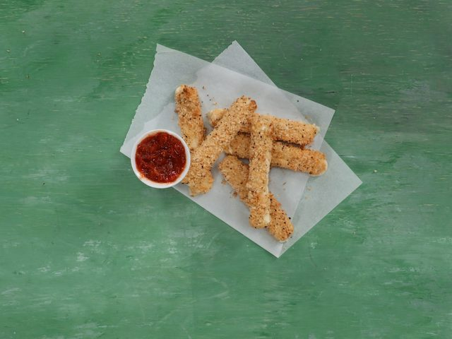

Air Fryer Mozzarella Sticks Recipe

Air Fryer Mozzarella Sticks
These homemade mozzarella sticks offer all of the crispy-coated, cheesy goodness you want without the deep-fried mess on your stovetop. We like to call that a “win-win.”
Ingredients
- 1 cup (about 4 1/4 oz.) all-purpose flour
- 1 teaspoon baking soda
- 2 large eggs
- 1 tablespoon whole milk
- 1 cup seasoned panko (Japanese-style breadcrumbs)
- 8 (1-oz.) mozzarella string cheese sticks
- ½ cup marinara sauce
Steps
-
Combine flour and baking soda in a shallow dish. Whisk eggs and milk together in a second shallow dish. Pour panko in a third shallow dish. Coat cheese sticks in flour mixture, and then in egg mixture; coat in breadcrumbs. Freeze breaded cheese sticks for 30 minutes.
-
Lightly coat air-fryer basket with cooking spray. Add 4 sticks at a time to fryer basket, and cook at 400°F for 6 minutes. Repeat with remaining cheese sticks, and serve immediately with marinara sauce.